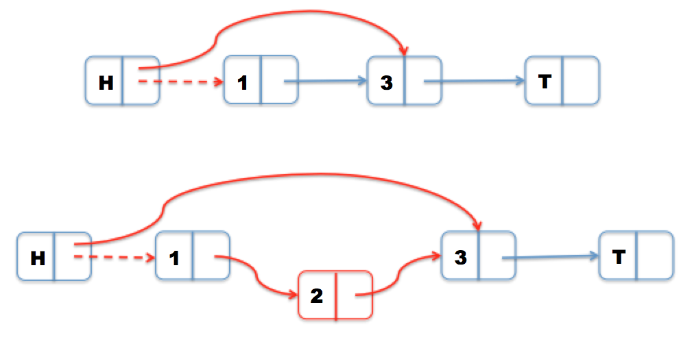
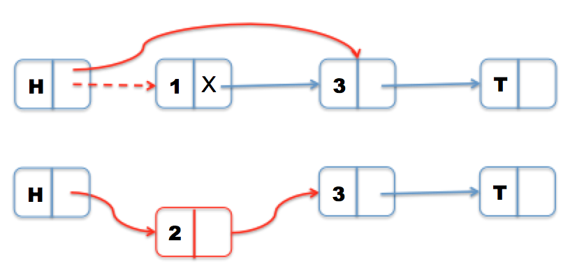

Summary
We implemented three variations of linked lists: lock-free, fine-grained, coarse-grained. We also checked for correctness of these three implementations against a sequential linked list without locks. We found, after various tests, that our lock-free implementation had better performance than our fine-grained or coarse-grained linked lists.
Background
Lock-free data structures allow multiple threads to concurrently access shared data without using synchronization primitives like mutexes. This is especially impressive because correct lock-free code prevents deadlock from occurring. Lock-free data structures also fix problems that might otherwise occur with locks such as page faults, or preemption while a thread is in a critical section (creating deadlock.) However, it is very difficult to write correct lock-free code. Our lock-free linked list is based on the non-blocking implementation described in Harris’ paper and supports inserting, removing, and finding a node. The correctness of Harris’ lock-free algorithm is ensured by linearizability, meaning that operations appear to occur atomically. In order words, the invocation of each operation is followed immediately by its response (Harris).
Approach
Our linked list is implemented such that there is a head node to identify entry into the list and a tail node to identify the end of the list.
(i) coarse-grain
Our coarse-grain linked list was implemented with a mutex that was obtained before beginning an operation and released after.
(ii) fine-grain
Our fine-grain linked list was implemented with hand-over-hand locking, where each list node included its own spinlock.
(iii) lock-free
We followed Harris’ paper to implement a non-blocking linked-list, which guarantees system-wide progress. This means that even if some threads stop completely, the other threads will continue and maintain progress of the task.
Insertion is pretty trivial. We simply find the appropriate spot for the inserted node (using a search function that finds the left and right nodes), and perform a compare and swap on the next field of the left node. This guarantees that no other thread has intercepted and changed the successor of left node. We use gcc’s __sync_bool_compare_and_swap to atomically check that values are what we’d expect them to be.
Deletion is more complicated, however, so we can’t use the same logic we would use in the sequential implementation of a linked list. Consider an example where we try to delete Node 1. Naively, we would just swing the head’s next pointer to Node 3 using compare and swap. But if we concurrently insert Node 2, then our single compare and swap won’t detect that a node has been inserted between Node 1 and Node 3. Thus, we would lose Node 2 when we delete Node 1.
Instead, as Harris proposes, we use two compare and swaps—the first logically deletes the node and the second physically deletes the node. We know a node is logically deleted if it is marked, meaning that its next field is marked. Since pointers in C++ are four-byte aligned, the last two bits of an address are unused. This means that we are free to change the last bit to a 1 to signal that it is “marked” and leave it as a 0 to signal that it is “unmarked.” Even if an address has a 1, we can still access it in its unmarked state and traverse through the linked list normally.
Now, if Node 2 is being inserted while Node 1 is in the process of being deleted, Node 2 will see that Node 1 is logically deleted and physically delete Node 1 before inserting itself. Deletion was more troublesome to implement than insertion and we had a segfault in our code, which turned out to be because of a bad memory access. Marked fields give us addresses that don’t make sense, so it’s important to be careful with getting the correct unmarked form.
Harris’ paper has a proof of correctness so we just assumed the algorithm we used is correct. Harris’ algorithm, however, doesn’t solve the “ABA problem.”
We examined David Stolp’s “Common Pitfalls in Writing Lock-Free Algorithms,” which showed that a lock-free implementation of a stack with sleeps both increased throughput and decreased processor utilization. We wanted to try including sleeps in our lock-free linked list, but we didn’t have time.
(iii) test suite
We wrote a python script that renders various trace files that test different use cases with defined behavior. For example, we test our linked lists on a large number of consecutive insertions, random insertions, alternating between a large block of insertions followed by a large block of deletions, and alternating between inserting at the beginning and end of the list. Each trace file was run on our three linked lists, as well as a basic sequential linked list. Performance time is measured using CycleTimer.h, where the total time is the sum of the time it takes to complete each operation.
To test for correctness of our implementations, we compared the results obtained from various trace files on our fine-grain, coarse-grain, and lock-free lists using multiple threads against the results obtained from our sequential list. The behavior of multiple threads is undefined, which is to say that inserting Node x before removing Node x would give different results than vice versa. To account for this, we created trace files where each group of n operations (where n is the number of threads) would never include inserting and removing the same node if a node of the same value didn’t already exist in the list. We used barriers to do this. Our requirement for correctness was just that a resulting linked list has the same nodes in the same order as the sequential linked list.
To test for performance, we tried to come up with as many types of test cases as possible. We tested each trace on various numbers of threads (up to 64 threads.)
Results
hi
References
http://www.contrib.andrew.cmu.edu/~sgbowen/15418/writeup.pdf
https://timharris.uk/papers/2001-disc.pdf
http://www.cs.rochester.edu/~scott/papers/1996_PODC_queues.pdf
http://blog.memsql.com/common-pitfalls-in-writing-lock-free-algorithms/
http://www.drdobbs.com/lock-free-data-structures/184401865
List of Work
We each divided the work equally.
Having trouble with Pages? Check out our documentation or contact support and we’ll help you sort it out.